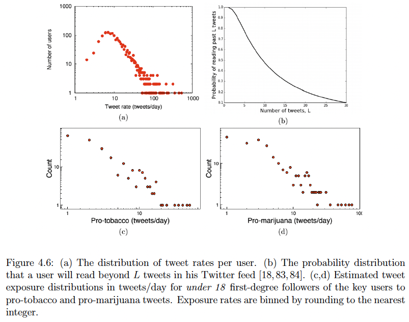

At a glance
- Measured teen exposure to smoking content on Twitter.
- Built supervised models to classify pro-tobacco messaging.
- Estimated vulnerable audiences for public health partners.
Problem
- Underage users encounter tobacco content without strict age controls.
- Exposure levels were unknown, hindering intervention design.
- Needed scalable methods to spot youth following pro-smoking accounts.
Solution
- Collected smoking-related tweets and follower networks at scale.
- Used supervised ML to classify promotional and advocacy content.
- Estimated exposure frequencies and hotspots for regulators.
Impact
- Revealed substantial teen exposure to pro-smoking messaging online.
- Supported advocacy for stronger platform age controls.
- Guided targeted health education and outreach campaigns.
Role & toolkit
- Led social media data collection and modeling efforts.
- Applied supervised ML, network analysis, and exposure estimation.
- Collaborated with public health partners on responsible reporting.
Visual highlights

Exposure estimation highlighted reach of pro-smoking tweets to teens.